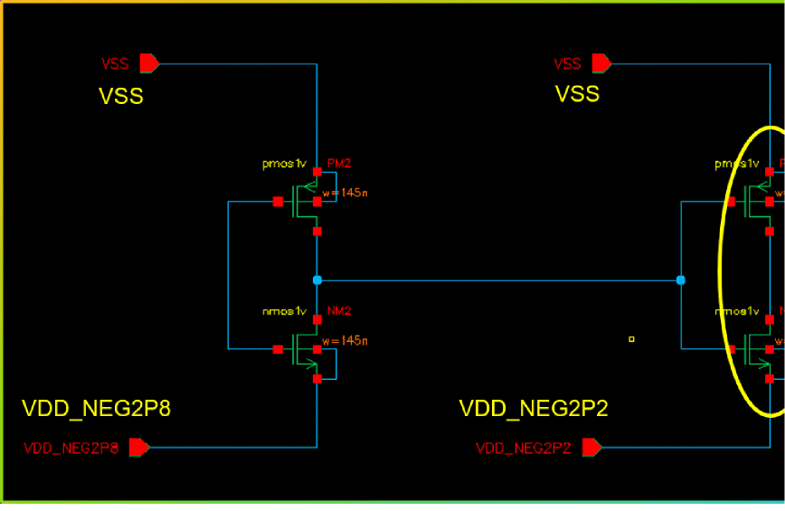
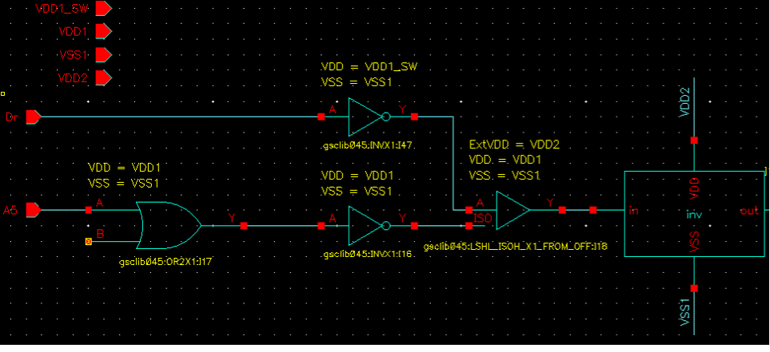

Level Shifter Checks
The following checks are performed for various types of level shifters in a design.
-
Missing Level Shifter check
Checks all the data connections for voltage compatibility. If the voltage values for driver and receiver are not compatible, an error is generated. In this check, the type of missing level shifter (high-to-low or low-to-high) is reported. The driver supplies might be MOS drain terminals, standard cell output, or output macro domain ports. Loads can be MOS gate terminals, standard cell input, or macro domain ports. In addition, domain crossings operating at different voltages without level shifters are reported in one of the following scenarios:- The driver power voltage is less than the receiver power voltage by the lower bound input voltage tolerance.
- The driver power voltage is more than the receiver power voltage by the upper bound input voltage tolerance.
- The driver ground voltage is less than the receiver ground voltage by the lower bound ground input voltage tolerance.
-
The driver ground voltage is more than the receiver ground voltage by the upper bound ground input voltage tolerance.
-
The driver voltage value is less than the maximum device voltage.
-
The driver voltage is less than the receiver voltage
-
No maximum device voltage found.
- The device-specific maximum device voltage value has been defined. The violations are reported at:
-
Pass-tx gate(exceeds maximum device voltage) -
M9andM10gates (exceeds maximum device voltage) - The device-specific tolerance value has been defined. The violations are reported at
- Pass-tx gate (missing level shifter)
- M9 and M10 gates (exceeds maximum device volatge)
-
No violations reported at pass-tx source/drain
-
Negative voltage with common ground supply. The violations are reported for
PM1,NM1(exceeds maximum device voltage)
-
The driver voltage is less than the receiver voltage
- Tolerance Settings
You can define the lower and upper tolerance values for input and input ground voltages in the Tolerance section.
The default value of the lower limit of the input power and input ground voltage is-0.10. It should be less than or equal to0.
The default value of the upper limit of the input power voltage and input ground voltage is0.10. It should be greater than or equal to0.
The missing level shifter check also supports the following:
- User-defined Registering Port Attributes for checking the boundary ports.
-
Supply States for explicit voltage values.
-
Incompatible Level Shifter check
In this check, all domain crossings at different operating voltages are checked for the level shifters voltage ranges. An error is reported if operating voltages are found incompatible, for example, high level shifters in a low-to-high crossing or conversely.
Incompatibility in operating voltages can arise due to the following:-
Voltage levels of signals
This checks for incompatible driver or receiver for a data pin with respect to input or output supply voltage range for a level shifter. -
Voltage levels of supply
This checks for incompatibility of level shifter supplies with respect to the input or output voltage range supported by the level shifter.
-
Voltage levels of signals
-
Redundant Level Shifter check
All domain crossings with level shifters at the same operating voltages are reported. In addition, the domain crossings at the macro boundary with a redundant level shifter are reported.
-
Protected Level Shifter check
The data is protected by using an enable signal. The protected level shifters in design along with their enable condition are highlighted.
-
Unprotected Level Shifter check
An unprotected dual rail level shifter is reported when all the following conditions are true: -
Floating Level Shifter check
The floating level shifters have their enable signal evaluated as floating. During the check, the level shifter is reported if its enable input can be traced to a floating value. While performing the in-design checks, the tool should ignore all supply states where all supplies are in OFF state. The tool also ignores all supply states in which no power supply or no ground supply is in the ON state. An information message is issued to indicate that the supply states are ignored.
 -
Potentially Floating Level Shifter check
This check identifies if a level shifter is driven by logic elements, such as an inverter or buffer, which have their input tied to a power net and the supply is in the OFF state. Such a level shifter cannot be considered as floating because the supply net could have carried some charge while in the ON state and could be slowly discharging towards 0V. This discharge might enable PMOS gates and clamp the level shifter. Consequently, such level shifter instances are categorized as potentially floating level shifters.
-
Always Enabled Level Shifter check
This check highlights the level shifters that have the enable pin tied to a fixed supply voltage and therefore, the state of the level shifter never changes. It keeps the data output always clamped. While trying to determine the enable expressions for enabled level shifters, the sense value for a signal (an occurrence net) is used if the corresponding module net and the module have a signal-sense registered using thedefine_signal_attribute.
and the occurrence net (top level net) for at least, one of the off_supplies mentioned in the definition, is in off state. If there are conflicting definitions across the span of the net, a warning message is issued.
-
Unused Enable Level Shifter check
This check highlights a level shifter that has the enable pin tied to a fixed supply voltage of opposite polarity. In this case, the enable pin is not used effectively.The unused enable level shifters have an enable signal tied to a fixed voltage and data output is never clamped.
Related Topics
Defining the Severity of Design Checks
Checking a Design in Foreground Mode
Checking a Design in Background Mode
Loading the Violations Database
Return to top